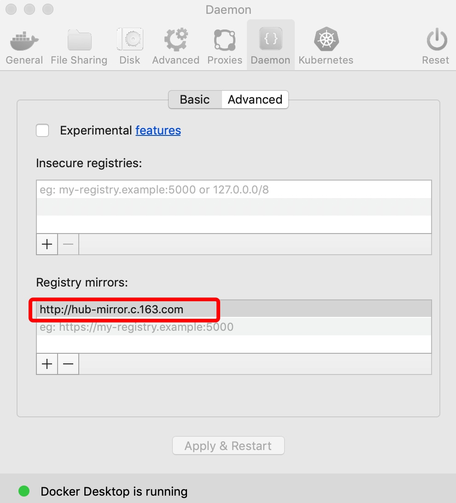

docker是一个容器，可以让开发者打包他们的应用以及依赖的环境到一个容器中，然后可以移植到别的机器上。容器是使用的沙箱机制，相互之间不会有任何接口。
docker 官网： http://www.docker.com
容器: 对象
镜像images: 类，是用于创建docker容器的模版
docker仓库https://hub.docker.com， 是用来提供各种镜像的仓库。
基本使用
# 运行方式 1： 类似于运行pyhton脚本 python xxx.py 参数
docker run ubuntu:18.10 /bin/echo "Hello world"
- ubuntu:18.10是指定要运行的镜像，docker会先从本机上检查是否存在，如果不存在会从docker hub下载公共镜像。
- /bin/echo "Hello world"， 在启动容器里执行命令
# 运行方式2： 交互式运行
docker run -i -t ubuntu:18.10 /bin/bash
- -t 在新容器中指定一个终端
- -i 允许你对容器内的标准输入 (STDIN) 进行交互。
后台以进程方式运行docker
docker run -d ubuntu:18.10 /bin/sh -c "while true; do echo hello world; sleep 1; done"
这个时候发现会出现一串字符，这个就是dicker的id。
- -d 让容器在后台运行
docker ps # 查看当前有哪些容器在运行
exit #退出容器或者`ctrl +D`
docker logs 容器id #查看容器内的标准输出
docker stop 容器id # 停止正在运行的docker
docker 镜像
docker pull REPOSITORY:TAG # 下载镜像
docker search httpd # 查找镜像
# 更新镜像，当自己在镜像内做了一些更新后，可以提交
# commit -m '更新信息' -a 作者 容器id 新版本的镜像名
docker commit -m="zzz update" -a="zzz" 容器的id zzz/ubuntu:v2
从零创建一个镜像
从零创建镜像的命令是 docker build, 其依赖于一个配置文件Dockerfile，这个文件包含了一组命令来告诉docker如何创建镜像。
docker build -t 镜像名 配置文件地址
配置文件的一个例子：
# 每一个指令的前缀必须是大写
# FROM 表示使用哪个镜像源
# RUN 表示告诉docker在镜像内执行命令
FROM ubuntu:16.04
RUN apt-get update
RUN apt-get install -y unzip cmake g++ make ffmpeg libx264-dev wget
WORKDIR /opt/
删除
docker rm 容器
docker rmi 镜像名
清理空间
docker system df
docker system prune -a
mac安装
直接从官网下载安装即可 https://download.docker.com/mac/stable/Docker.dmg。
由于国内网速问题，安装完docker后，后续拉取镜像可能会十分缓慢，可以配置加速器来解决，如下图所示。
阿里云的加速器：https://help.aliyun.com/document_detail/60750.html
网易加速器：http://hub-mirror.c.163.com
官方中国加速器：https://registry.docker-cn.com
ustc的镜像：https://docker.mirrors.ustc.edu.cn
daocloud：https://www.daocloud.io/mirror#accelerator-doc（注册后使用）

参考资料
https://www.runoob.com/docker/macos-docker-install.html
docker 常用参数 https://blog.csdn.net/Hello_World_QWP/article/details/84554031
安装记录
sudo docker build . -t registry.aibee.cn/zzzheng/logstat:0.1
docker commit 修改镜像 https://blog.csdn.net/jiankunking/article/details/62056392
制作镜像
docker build
https://juejin.im/post/5bd95412f265da395a1dd17c
Dockerfile